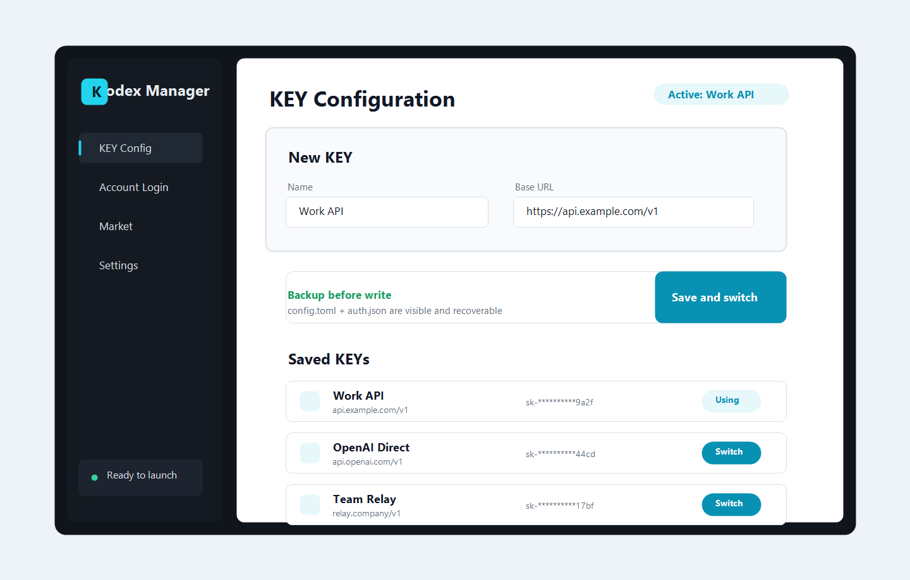

无需魔法安装使用，打开管理器即可配置 KEY、应用账号并启动 Codex。

为什么需要它
保存多个本地 KEY，点击切换后自动写入 Codex 的 config.toml 和 auth.json。
登录兼容 NewAPI 的服务，查询远程 KEY，解密后同步到本地账号列表。
启动或重启 Codex 前先应用当前账号，减少配置残留和手动操作。
核心能力
围绕 Codex 日常使用，把高频操作做成可见、可回退的流程。
V1 聚焦 KEY 管理、Codex 路径检测、配置预览、备份恢复和插件入口解锁。
免登录 KEY 配置
直接填写名称、Base URL 和 API Key，保存后立刻切换为当前 Codex 配置。
登录 NewAPI
通过账号密码登录兼容服务，拉取远程 KEY 列表，按需同步或直接使用。
配置查看与恢复
在应用内查看当前 config.toml、auth.json，并从最近一次备份恢复。
插件入口解锁
启动时动态选择调试端口并注入增强脚本，不修改 Codex 原始安装文件。
使用流程
添加 KEY，切换账号，然后启动 Codex。
当前账号会被写入用户的 Codex 配置目录。每次应用账号或清除 API 模式前，核心逻辑都会先创建备份， 这样可以在配置异常时回到上一个可用状态。
- 填写本地 KEY，或登录 NewAPI 后同步远程 KEY。
- 选择一个账号并点击切换，写入 config.toml 和 auth.json。
- 用 Codex Manager 启动或重启 Codex，让当前配置生效。
- 需要回滚时打开配置预览，恢复最近一次备份。
本地安全边界
不改安装目录，关键配置写入前先备份。
不 patch app.asar
增强能力在启动时通过参数和调试端口注入，避免直接改动 Codex 应用包。
配置目录可追踪
管理器配置保存在平台配置目录，Codex 配置默认指向 ~/.codex。
备份可恢复
账号切换、应用配置和清除 API 模式前都会生成备份，便于回滚。
常见问题
先讲清楚产品边界。
Codex Manager 会修改 Codex 安装目录吗？
不会。V1 的设计目标是不 patch app.asar，也不写入 Codex 安装目录，只管理用户配置和启动参数。
它主要解决什么问题？
它把 KEY 保存、账号切换、Codex 配置写入、备份恢复和启动增强集中到一个桌面界面里。
支持 NewAPI 吗？
支持兼容 NewAPI 的登录、远程 KEY 查询、远程 KEY 解密和本地同步流程。
支持 Windows 和 macOS 吗？
项目基于 Rust + Tauri，核心逻辑面向跨平台桌面应用，Windows 和 macOS 都在规划的使用范围内。